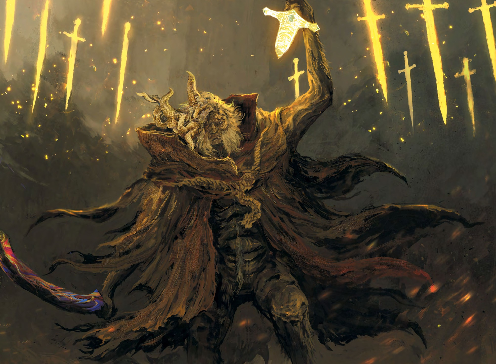

ARTE DE PÁGINA DUPLA (ESQUERDA)
Salve a imagem completa do Morgott (horizontal) como:
morgott_spread_full.jpg
O código irá mostrar apenas o lado esquerdo aqui.
324
ARTE DE PÁGINA DUPLA (DIREITA)
A mesma imagem será usada aqui, mostrando o lado direito automaticamente.
325